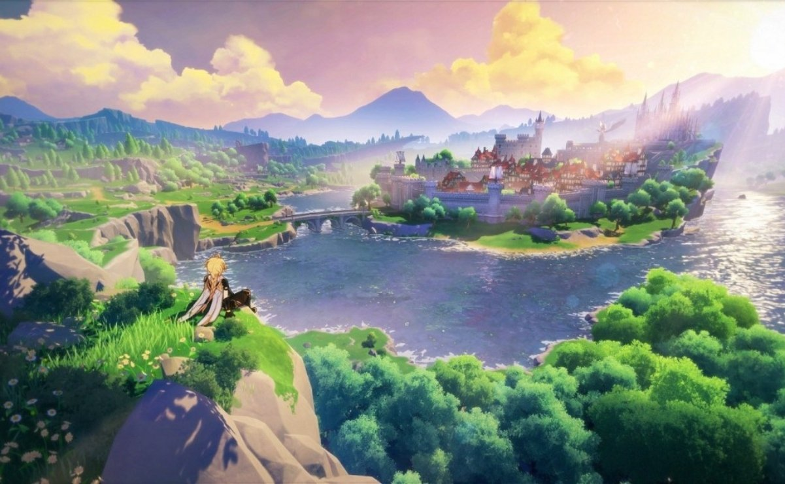
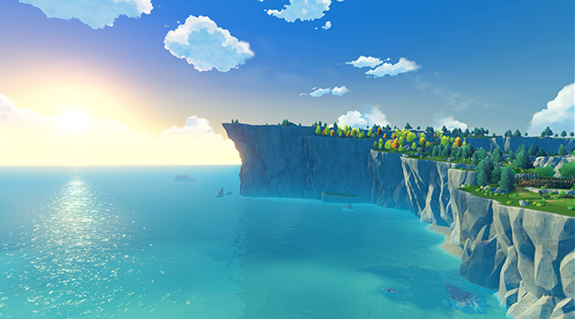

Мондштадт
Місто свободи. Розташований на північно-східній частині материка Тейват. Минаючи гірські ущелини та великі рівнини, вітер свободи з ароматом кульбаб проноситься над Сидровим озером, у серці якого розкинувся величний Мондштадт, і приносить із собою благословення архонта вітру Барбатоса
Сидрове озеро

Природне прісноводне озеро, що оточує Мондштадт. Кришталево чиста вода Сидрового озера зберегла первородну чистоту, яке хвилі продовжують блищати вже багато тисячоліть. Солодкуватий присмак озерної води прославив вироблений у Мондштадті алкоголь на весь Тейват і фактично став символом міста
Узбережжя Сокола

Узбережжя Сокола, що тягнеться від самої Рівнини Бризів, разом з Мисом Віри оточують з трьох сторін затоку на схід від Мондштадта. Через свою протяжність і мілководні пляжі Узбережжя Сокола є популярним місцем для відпочинку мондштадтців. Іноді в небі можна помітити сокола, що пролітає.
Мис Віри
Мис Віри знаходиться на південному сході Мондштадта, де пагорби Пісні вітру зустрічаються з морем. Легенда говорить, що якась закохана пара заприсяглася один одному у вірності, але залишила по собі лише зворушливу романтичну історію. Мис Віри досі вважається найкращим місцем для побачень та освідчень у коханні. З вершини мису можна насолоджуватися не тільки сходами і заходами сонця, але також і мальовничим краєвидом, що відкривається на Рівнину Бризів.
Винокурня «Світанок»

Винокурня «Світанок» знаходиться на південний захід від Мондштадта. Секрети виробництва найкращого мондштадтського вина передаються від батька до сина. З вирощеного винограду виробляють різні сорти вин, які популярні по всьому континенту. Щороку лише мала частина вина залишається у Мондштадті. Більша частина йде на продаж із купцями за південними торговими маршрутами.
Спрінгвейл

Безтурботне село Спрінгвейл розташувалося вздовж озера на півдні Мондштадта. Більшість мешканців села цілий рік займаються полюванням і постачають м'ясо до ресторанів Мондштадта. Сільська атмосфера та дика природа Спрінгвейлу приваблюють туристів. Якщо вам під час візиту сюди пощастить зустріти одного легендарного м'ясного шеф-кухаря, я гарантую, що ви не залишите Спрінгвейл незадоволеним.
Храм Тисячі вітрів

Руїни стародавнього храму розташовані на північний схід від Мондштадта. За чутками, тисячу років тому тут був храм, присвячений стародавньому богові вітру, але зараз він стоїть зруйнований і спустошений. На кам'яних колонах усередині храму видно колись багато прикрашені барельєфи. На кам'яних скульптурах, увінчаних давно забутими символами, висічено стародавнє прислів'я: «Тільки час дає прорости насіння історії, принесеним вітром».